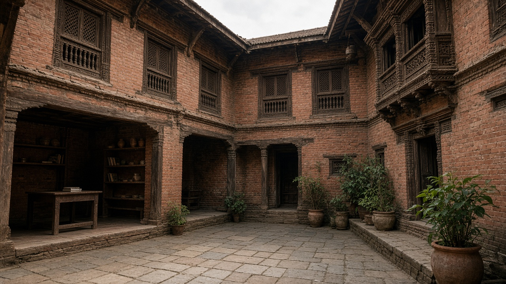
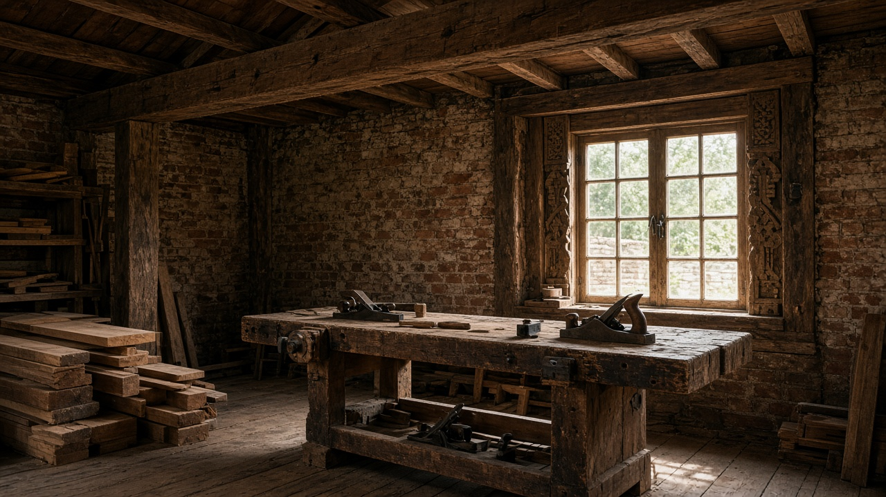
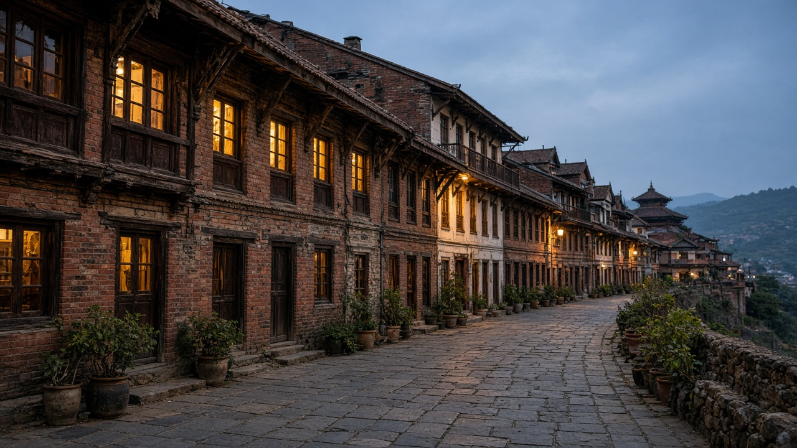

Heritage Conservation and Adaptive Reuse
Published on August 20, 2026

Heritage conservation keeps the streets, courtyards, and craft skills that give a city memory, while adaptive reuse finds new work for old structures instead of demolishing them for floor area. Palaces, rest houses, mills, schools, and courtyard homes can become libraries, clinics, workshops, or housing if seismic strengthening, fire exits, and services are inserted with care. Authenticity is not frozen appearance: it is continuity of materials, proportions, and living use. After the 2015 earthquakes, Kathmandu Valley’s monument zones showed both the fragility of poorly maintained timber-brick buildings and the knowledge of carpenters and masons who could rebuild them. Empty monuments that only serve photographs fail the neighbourhoods that still need rooms.
Regulation should protect ensembles, not isolated facades. Height limits, view corridors, and rules against fake historic cladding keep Patan, Bhaktapur, and hill towns such as Bandipur readable as places rather than theme parks. Incentives—transfer of unused floor rights, tax relief for seismic retrofit, and grants for traditional crafts—make conservation cheaper than illegal add-ons. Resident owners need technical help so they are not forced to sell to hotel chains. Adaptive reuse must include ordinary buildings: 1950s shops and industrial sheds often hold more neighbourhood value than a single palace. Documentation, measured drawings, and open inventories prevent “unknown” demolitions.
Tourism can fund maintenance if visitor fees return to local trusts and if residents keep housing in historic cores. Over-commercialisation that converts every ground floor to souvenir retail hollows out night-time life and raises rents. Municipalities should pair conservation bylaws with housing support and disaster-safe reconstruction manuals in local languages. Success is a living historic core where children still play in courtyards, crafts still have workshops, and new uses sit inside old bones—not a fenced monument with a ticket booth and empty laneways after dusk.

सम्पदा संरक्षणले सडक, आँगन र शिल्प सीप जोगाउँछ जसले शहरलाई स्मृति दिन्छ भने अनुकूल पुनःप्रयोगले तला क्षेत्रका लागि भत्काउनुभन्दा पुराना संरचनालाई नयाँ काम दिन्छ। दरबार, पाटी, मिल, विद्यालय र आँगने घर पुस्तकालय, क्लिनिक, कार्यशाला वा आवास बन्न सक्छन् यदि भूकम्पीय सुदृढीकरण, आगो निकास र सेवा सावधानीसँग राखिन्छन्। प्रामाणिकता जमेको रुप होइन: सामग्री, अनुपात र जीवित प्रयोगको निरन्तरता हो। २०१५ का भूकम्पपछि काठमाडौं उपत्यकाका स्मारक क्षेत्रले कमजोर काठ-इँटा भवनको नाजुकता र तिनीहरू पुनर्निर्माण गर्न सक्ने सिकर्मी तथा मिस्त्रीको ज्ञान दुवै देखाए। केवल तस्बिरका लागि खाली स्मारकले अझै कोठा चाहिने छिमेकलाई असफल पार्छन्।
नियमनले एक्ला अनुहार होइन समूह जोगाउनुपर्छ। उचाइ सीमा, दृश्य करिडोर र नक्कली ऐतिहासिक आवरणविरुद्ध नियमले पाटन, भक्तपुर र बन्दीपुरजस्ता पहाडी सहरलाई विषय पार्क होइन पढ्न मिल्ने ठाउँ राख्छन्। प्रोत्साहन—प्रयोग नभएको तला अधिकार स्थानान्तरण, भूकम्पीय सुधार कर राहत र परम्परागत शिल्प अनुदान—ले संरक्षण अवैध थपभन्दा सस्तो बनाउँछ। बस्ने मालिकलाई प्राविधिक सहयोग चाहिन्छ ताकि होटल शृङ्खलामा बेच्न नबाध्य होऊन्। अनुकूल पुनःप्रयोगमा सामान्य भवन पनि पर्छन्: सन् १९५० का पसल र औद्योगिक गोदामले एउटा दरबारभन्दा बढी छिमेक मूल्य राख्न सक्छन्। अभिलेख, नाप चित्र र खुला सूचीले «अज्ञात» भत्काइ रोक्छन्।
पर्यटनले मर्मत कोष गर्न सक्छ यदि आगन्तुक शुल्क स्थानीय गुठीमा फर्कन्छ र ऐतिहासिक केन्द्रमा बासिन्दा आवास राख्छन्। प्रत्येक तल्लो तला स्मृति पसल बनाउने अति-व्यावसायीकरणले रातको जीवन खोक्रो पार्छ र भाडा बढाउँछ। नगरपालिकाले संरक्षण उपकानुनलाई आवास सहयोग र स्थानीय भाषामा विपद्-सुरक्षित पुनर्निर्माण पुस्तिकासँग जोड्नुपर्छ। सफलता जीवित ऐतिहासिक केन्द्र हो जहाँ बालबालिका आँगनमा खेल्छन्, शिल्पलाई कार्यशाला छ र नयाँ प्रयोग पुरानो हड्डीभित्र बस्छन्—टिकट कक्ष भएको घेरिएको स्मारक र साँझपछि रित्तो गल्ली होइन।

सम्पदा संरक्षण सड़कें, आँगन और शिल्प कौशल बचाता है जो शहर को स्मृति देते हैं जबकि अनुकूल पुनःउपयोग तल क्षेत्र के लिए तोड़ने के बजाय पुरानी संरचनाओं को नया काम देता है। महल, विश्राम गृह, मिल, विद्यालय और आँगन घर पुस्तकालय, क्लिनिक, कार्यशाला या आवास बन सकते हैं यदि भूकंपीय सुदृढ़ीकरण, आग निकास और सेवाएँ सावधानी से डाली जाएँ। प्रामाणिकता जमी शक्ल नहीं: सामग्री, अनुपात और जीवित उपयोग की निरंतरता है। २०१५ के भूकंप बाद काठमांडू घाटी के स्मारक क्षेत्रों ने कमज़ोर लकड़ी-ईंट इमारतों की नाज़ुकता और उन्हें फिर बनाने वाले बढ़ई तथा मिस्त्रियों का ज्ञान दोनों दिखाए। केवल तस्वीरों के लिए खाली स्मारक अभी कमरे चाहने वाले मोहल्लों को असफल करते हैं।
नियमन को अकेले अग्रभाग नहीं समूह बचाना चाहिए। ऊँचाई सीमा, दृश्य गलियारे और नकली ऐतिहासिक आवरण के विरुद्ध नियम पाटन, भक्तपुर और बंदीपुर जैसे पहाड़ी नगरों को विषय पार्क नहीं पढ़ने योग्य जगह रखते हैं। प्रोत्साहन—अप्रयुक्त तल अधिकार हस्तांतरण, भूकंपीय सुधार कर राहत और पारंपरिक शिल्प अनुदान—संरक्षण को अवैध जोड़ से सस्ता बनाते हैं। रहने वाले मालिकों को तकनीकी मदद चाहिए ताकि होटल शृंखलाओं को बेचने को मजबूर न हों। अनुकूल पुनःउपयोग में साधारण इमारतें भी आती हैं: सन् १९५० की दुकानें और औद्योगिक गोदाम एक महल से अधिक मोहल्ला मूल्य रख सकती हैं। अभिलेख, नाप चित्र और खुली सूची «अज्ञात» तोड़ रोकती हैं।
पर्यटन रखरखाव कोष कर सकता है यदि आगंतुक शुल्क स्थानीय न्यासों में लौटे और ऐतिहासिक केंद्र में निवासी आवास रखें। हर निचली मंज़िल स्मृति दुकान बनाने वाला अति-व्यावसायीकरण रात का जीवन खोखला करता है और किराया बढ़ाता है। नगरपालिकाओं को संरक्षण उपनियम आवास सहयोग और स्थानीय भाषा में आपदा-सुरक्षित पुनर्निर्माण पुस्तिकाओं से जोड़ना चाहिए। सफलता जीवित ऐतिहासिक केंद्र है जहाँ बच्चे आँगनों में खेलें, शिल्प की कार्यशालाएँ हों और नए उपयोग पुरानी हड्डियों में बैठें—टिकट कक्ष वाला घिरा स्मारक और शाम बाद खाली गलियाँ नहीं।